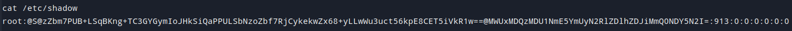
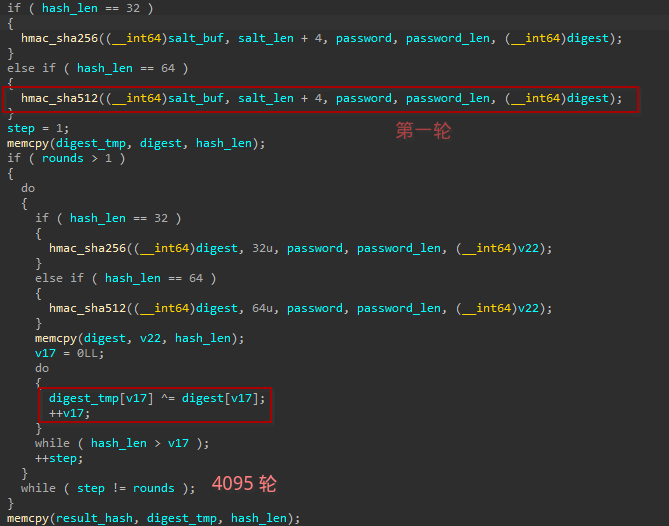
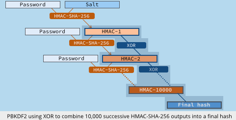

前言
在 2021 年想要碰撞 QNX Hash 发现 hashcat 不支持 QNX 6.6.0版本。当时 issue 就有人提了这个需求，但我一直很忙没时间开发。
直到2023年9月的艰难单刷工信部车联网攻防演练，又遇到了 QNX 7 的 Hash，发现那么多年过去了还是没支持。
为了防止下次又遇到这个需求，于是就抽空研究了 qnx 的库还有 hashcat，为了编写 hashcat 模块走了一点弯路。

QNX /etc/shadow hash算法分析
根据官方文档 QNX 700 docs: accounts_etc_shadow，可以得知Hash组成如下
@digest@hash@salt
@digest,iterations@hash@salt
这个 hash 使用 @ 作为分隔符，大写的 S 代表是 SHA-512，小写的 s 代表 SHA-256。如果加逗号和数字就代表迭代的次数。随后是 Base64 格式的 hash 和 base64 格式的 salt。
阅读完 QNX 官方文档的描述，给人的感觉是原来那么简单。如果看了 hashcat 的 QNX6 (-m 19200) 的模块，第一反应就是，是不是改一下迭代和格式就行了？
于是我复制了一份 QNX6 碰撞模块，想复用代码减轻工作量。按照官方文档适配，hashcat 总是返回 self-test 失败。随后分析 /src/OpenCL/m19200.cl 发现参考了 John 的代码，并且做了一些 hack 的处理，不够优雅。首先猜测是这段 CL 代码有 bug，下一步就是去分析 QNX 7 的 hash 生成逻辑。
hash 的生成逻辑在 /usr/lib/pam.qnx.so
分析完逻辑，和 m19200.cl 对比发现，首先旧版本 CL 代码里轮次不对，第一轮就是盐和密码拼接计算一次 SHA，其次新生成的 digest 没有和上一次结果异或。所以不是简单 base64 就行的。

其实新版的 hash 生成逻辑使用的是 标准的 PBKDF2 (Password-Based Key Derivation Function) 算法，很多软件（Adobe、MacOS、Cisco等）都使用这个算法生成 Hash，迭代次数越高，碰撞 hash 的效率就越低。QNX 官方文档没有明说算法名称，只说是 SHA-512，某种意义上提高了安全研究门槛。

可以使用 Cyberchef 来验证。
https://gchq.github.io/CyberChef/#recipe=Derive_PBKDF2_key(%7B'option':'UTF8','string':'hashcat'%7D,512,4096,'SHA512',%7B'option':'Base64','string':'NDY2MDEwNjk3YjBjYzM2MzliMzc3Mzc0ZTNiMTAzNzE%3D'%7D)&input=dm0ybkJHSGVzNlFrWHJhMGY3NFhtb3VTaVJ6allEM3IvMHB5K3R4djBLcjhBNGhDUE1HRkhvWnFyNDFKRmlZY0pQUE9lSWhlcUZzZU15THl3LzE1UHc9PQ
Hashcat模块编写
参考官方文档
https://github.com/hashcat/hashcat/blob/master/docs/hashcat-plugin-development-guide.md
最开始我还在想办法写新的 CL 代码，得知是标准算法后，直接摆烂，想找一个顺眼的来改。
./hashcat -hh | grep PBKDF2
11900 | PBKDF2-HMAC-MD5 | Generic KDF
12000 | PBKDF2-HMAC-SHA1 | Generic KDF
10900 | PBKDF2-HMAC-SHA256 | Generic KDF
12100 | PBKDF2-HMAC-SHA512 | Generic KDF
2500 | WPA-EAPOL-PBKDF2 | Network Protocol
22000 | WPA-PBKDF2-PMKID+EAPOL | Network Protocol
16800 | WPA-PMKID-PBKDF2 | Network Protocol
12800 | MS-AzureSync PBKDF2-HMAC-SHA256 | Operating System
9200 | Cisco-IOS $8$ (PBKDF2-SHA256) | Operating System
7100 | macOS v10.8+ (PBKDF2-SHA512) | Operating System
hashcat 每次运行都会自检当前模块，ST_HASH 和 ST_PASS 就是测试用例。于是把 KERN_TYPE 直接改为7100，打算一点一点调试，但是没想到一次就跑通了。
hashcat 是开源项目，合并代码比较慢，所以附上代码。
/**
* Author......: See docs/credits.txt
* License.....: MIT
*/
#include "common.h"
#include "types.h"
#include "modules.h"
#include "bitops.h"
#include "convert.h"
#include "shared.h"
#include "emu_inc_hash_sha512.h"
#include "memory.h"
static const u32 ATTACK_EXEC = ATTACK_EXEC_OUTSIDE_KERNEL;
static const u32 DGST_POS0 = 0;
static const u32 DGST_POS1 = 1;
static const u32 DGST_POS2 = 2;
static const u32 DGST_POS3 = 3;
static const u32 DGST_SIZE = DGST_SIZE_8_16;
static const u32 HASH_CATEGORY = HASH_CATEGORY_OS;
static const char *HASH_NAME = "QNX 7 /etc/shadow (SHA512)";
static const u64 KERN_TYPE = 7100;
static const u32 OPTI_TYPE = OPTI_TYPE_ZERO_BYTE
| OPTI_TYPE_USES_BITS_64
| OPTI_TYPE_SLOW_HASH_SIMD_LOOP;
static const u64 OPTS_TYPE = OPTS_TYPE_STOCK_MODULE
| OPTS_TYPE_PT_GENERATE_LE
| OPTS_TYPE_ST_BASE64
| OPTS_TYPE_HASH_COPY;
static const u32 SALT_TYPE = SALT_TYPE_EMBEDDED;
static const char *ST_PASS = "hashcat";
static const char *ST_HASH = "@S@vm2nBGHes6QkXra0f74XmouSiRzjYD3r/0py+txv0Kr8A4hCPMGFHoZqr41JFiYcJPPOeIheqFseMyLyw/15Pw==@NDY2MDEwNjk3YjBjYzM2MzliMzc3Mzc0ZTNiMTAzNzE=";
u32 module_attack_exec (MAYBE_UNUSED const hashconfig_t *hashconfig, MAYBE_UNUSED const user_options_t *user_options, MAYBE_UNUSED const user_options_extra_t *user_options_extra) { return ATTACK_EXEC; }
u32 module_dgst_pos0 (MAYBE_UNUSED const hashconfig_t *hashconfig, MAYBE_UNUSED const user_options_t *user_options, MAYBE_UNUSED const user_options_extra_t *user_options_extra) { return DGST_POS0; }
u32 module_dgst_pos1 (MAYBE_UNUSED const hashconfig_t *hashconfig, MAYBE_UNUSED const user_options_t *user_options, MAYBE_UNUSED const user_options_extra_t *user_options_extra) { return DGST_POS1; }
u32 module_dgst_pos2 (MAYBE_UNUSED const hashconfig_t *hashconfig, MAYBE_UNUSED const user_options_t *user_options, MAYBE_UNUSED const user_options_extra_t *user_options_extra) { return DGST_POS2; }
u32 module_dgst_pos3 (MAYBE_UNUSED const hashconfig_t *hashconfig, MAYBE_UNUSED const user_options_t *user_options, MAYBE_UNUSED const user_options_extra_t *user_options_extra) { return DGST_POS3; }
u32 module_dgst_size (MAYBE_UNUSED const hashconfig_t *hashconfig, MAYBE_UNUSED const user_options_t *user_options, MAYBE_UNUSED const user_options_extra_t *user_options_extra) { return DGST_SIZE; }
u32 module_hash_category (MAYBE_UNUSED const hashconfig_t *hashconfig, MAYBE_UNUSED const user_options_t *user_options, MAYBE_UNUSED const user_options_extra_t *user_options_extra) { return HASH_CATEGORY; }
const char *module_hash_name (MAYBE_UNUSED const hashconfig_t *hashconfig, MAYBE_UNUSED const user_options_t *user_options, MAYBE_UNUSED const user_options_extra_t *user_options_extra) { return HASH_NAME; }
u64 module_kern_type (MAYBE_UNUSED const hashconfig_t *hashconfig, MAYBE_UNUSED const user_options_t *user_options, MAYBE_UNUSED const user_options_extra_t *user_options_extra) { return KERN_TYPE; }
u32 module_opti_type (MAYBE_UNUSED const hashconfig_t *hashconfig, MAYBE_UNUSED const user_options_t *user_options, MAYBE_UNUSED const user_options_extra_t *user_options_extra) { return OPTI_TYPE; }
u64 module_opts_type (MAYBE_UNUSED const hashconfig_t *hashconfig, MAYBE_UNUSED const user_options_t *user_options, MAYBE_UNUSED const user_options_extra_t *user_options_extra) { return OPTS_TYPE; }
u32 module_salt_type (MAYBE_UNUSED const hashconfig_t *hashconfig, MAYBE_UNUSED const user_options_t *user_options, MAYBE_UNUSED const user_options_extra_t *user_options_extra) { return SALT_TYPE; }
const char *module_st_hash (MAYBE_UNUSED const hashconfig_t *hashconfig, MAYBE_UNUSED const user_options_t *user_options, MAYBE_UNUSED const user_options_extra_t *user_options_extra) { return ST_HASH; }
const char *module_st_pass (MAYBE_UNUSED const hashconfig_t *hashconfig, MAYBE_UNUSED const user_options_t *user_options, MAYBE_UNUSED const user_options_extra_t *user_options_extra) { return ST_PASS; }
typedef struct pbkdf2_sha512
{
u32 salt_buf[64];
} pbkdf2_sha512_t;
typedef struct pbkdf2_sha512_tmp
{
u64 ipad[8];
u64 opad[8];
u64 dgst[16];
u64 out[16];
} pbkdf2_sha512_tmp_t;
u64 module_esalt_size (MAYBE_UNUSED const hashconfig_t *hashconfig, MAYBE_UNUSED const user_options_t *user_options, MAYBE_UNUSED const user_options_extra_t *user_options_extra)
{
const u64 esalt_size = (const u64) sizeof (pbkdf2_sha512_t);
return esalt_size;
}
u64 module_tmp_size (MAYBE_UNUSED const hashconfig_t *hashconfig, MAYBE_UNUSED const user_options_t *user_options, MAYBE_UNUSED const user_options_extra_t *user_options_extra)
{
const u64 tmp_size = (const u64) sizeof (pbkdf2_sha512_tmp_t);
return tmp_size;
}
static const int ROUNDS_QNX = 4096;
static const int HASH_SIZE = 64;
int module_hash_decode (MAYBE_UNUSED const hashconfig_t *hashconfig, MAYBE_UNUSED void *digest_buf, MAYBE_UNUSED salt_t *salt, MAYBE_UNUSED void *esalt_buf, MAYBE_UNUSED void *hook_salt_buf, MAYBE_UNUSED hashinfo_t *hash_info, const char *line_buf, MAYBE_UNUSED const int line_len)
{
u64 *digest = (u64 *) digest_buf;
pbkdf2_sha512_t *pbkdf2_sha512 = (pbkdf2_sha512_t *) esalt_buf;
hc_token_t token;
memset (&token, 0, sizeof (hc_token_t));
token.token_cnt = 4;
// @digest@hash@salt
// @digest,iterations@hash@salt
token.sep[0] = '@';
token.len[0] = 0;
token.attr[0] = TOKEN_ATTR_FIXED_LENGTH;
token.sep[1] = '@';
token.len_min[1] = 1;
token.len_max[1] = 8;
token.attr[1] = TOKEN_ATTR_VERIFY_LENGTH;
token.sep[2] = '@';
token.len_min[2] = 64;
token.len_max[2] = 100;
token.attr[2] = TOKEN_ATTR_VERIFY_LENGTH | TOKEN_ATTR_VERIFY_BASE64A;
token.sep[3] = '@';
token.len_min[3] = 32;
token.len_max[3] = 60;
token.attr[3] = TOKEN_ATTR_VERIFY_LENGTH | TOKEN_ATTR_VERIFY_BASE64A;
const int rc_tokenizer = input_tokenizer ((const u8 *) line_buf, line_len, &token);
if (rc_tokenizer != PARSER_OK) return (rc_tokenizer);
// check hash type
if (token.buf[1][0] != 'S') return (PARSER_SIGNATURE_UNMATCHED);
// check iter
u32 iter = ROUNDS_QNX;
if (token.len[1] > 1)
{
if (token.buf[1][1] != ',') return (PARSER_SEPARATOR_UNMATCHED);
iter = hc_strtoul ((const char *) token.buf[1] + 2, NULL, 10);
}
// iter++; the additional round is added in the init kernel
salt->salt_iter = iter - 1;
const u8 *hash_pos = token.buf[2];
const int hash_len = token.len[2];
int decoded_len;
u8 tmp_buf[512];
memset (tmp_buf, 0, sizeof (tmp_buf));
decoded_len = base64_decode (base64_to_int, hash_pos, hash_len, tmp_buf);
if (decoded_len != HASH_SIZE) {
return (PARSER_SALT_LENGTH);
}
memcpy (digest, tmp_buf, 64);
digest[0] = byte_swap_64 (digest[0]);
digest[1] = byte_swap_64 (digest[1]);
digest[2] = byte_swap_64 (digest[2]);
digest[3] = byte_swap_64 (digest[3]);
digest[4] = byte_swap_64 (digest[4]);
digest[5] = byte_swap_64 (digest[5]);
digest[6] = byte_swap_64 (digest[6]);
digest[7] = byte_swap_64 (digest[7]);
// salt
const u8 *salt_pos = token.buf[3];
const int salt_len = token.len[3];
memset (tmp_buf, 0, sizeof (tmp_buf));
decoded_len = base64_decode (base64_to_int, salt_pos, salt_len, tmp_buf);
if (decoded_len < 1) {
return (PARSER_SALT_LENGTH);
}
else
{
memcpy (pbkdf2_sha512->salt_buf, tmp_buf, decoded_len);
salt->salt_buf[0] = pbkdf2_sha512->salt_buf[0];
salt->salt_buf[1] = pbkdf2_sha512->salt_buf[1];
salt->salt_buf[2] = pbkdf2_sha512->salt_buf[2];
salt->salt_buf[3] = pbkdf2_sha512->salt_buf[3];
salt->salt_buf[4] = pbkdf2_sha512->salt_buf[4];
salt->salt_buf[5] = pbkdf2_sha512->salt_buf[5];
salt->salt_buf[6] = pbkdf2_sha512->salt_buf[6];
salt->salt_buf[7] = pbkdf2_sha512->salt_buf[7];
salt->salt_len = decoded_len;
}
return (PARSER_OK);
}
int module_hash_encode (MAYBE_UNUSED const hashconfig_t *hashconfig, MAYBE_UNUSED const void *digest_buf, MAYBE_UNUSED const salt_t *salt, MAYBE_UNUSED const void *esalt_buf, MAYBE_UNUSED const void *hook_salt_buf, MAYBE_UNUSED const hashinfo_t *hash_info, char *line_buf, MAYBE_UNUSED const int line_size)
{
return snprintf (line_buf, line_size, "%s", hash_info->orighash);
}
void module_init (module_ctx_t *module_ctx)
{
module_ctx->module_context_size = MODULE_CONTEXT_SIZE_CURRENT;
module_ctx->module_interface_version = MODULE_INTERFACE_VERSION_CURRENT;
module_ctx->module_attack_exec = module_attack_exec;
module_ctx->module_benchmark_esalt = MODULE_DEFAULT;
module_ctx->module_benchmark_hook_salt = MODULE_DEFAULT;
module_ctx->module_benchmark_mask = MODULE_DEFAULT;
module_ctx->module_benchmark_charset = MODULE_DEFAULT;
module_ctx->module_benchmark_salt = MODULE_DEFAULT;
module_ctx->module_build_plain_postprocess = MODULE_DEFAULT;
module_ctx->module_deep_comp_kernel = MODULE_DEFAULT;
module_ctx->module_deprecated_notice = MODULE_DEFAULT;
module_ctx->module_dgst_pos0 = module_dgst_pos0;
module_ctx->module_dgst_pos1 = module_dgst_pos1;
module_ctx->module_dgst_pos2 = module_dgst_pos2;
module_ctx->module_dgst_pos3 = module_dgst_pos3;
module_ctx->module_dgst_size = module_dgst_size;
module_ctx->module_dictstat_disable = MODULE_DEFAULT;
module_ctx->module_esalt_size = module_esalt_size;
module_ctx->module_extra_buffer_size = MODULE_DEFAULT;
module_ctx->module_extra_tmp_size = MODULE_DEFAULT;
module_ctx->module_extra_tuningdb_block = MODULE_DEFAULT;
module_ctx->module_forced_outfile_format = MODULE_DEFAULT;
module_ctx->module_hash_binary_count = MODULE_DEFAULT;
module_ctx->module_hash_binary_parse = MODULE_DEFAULT;
module_ctx->module_hash_binary_save = MODULE_DEFAULT;
module_ctx->module_hash_decode_postprocess = MODULE_DEFAULT;
module_ctx->module_hash_decode_potfile = MODULE_DEFAULT;
module_ctx->module_hash_decode_zero_hash = MODULE_DEFAULT;
module_ctx->module_hash_decode = module_hash_decode;
module_ctx->module_hash_encode_status = MODULE_DEFAULT;
module_ctx->module_hash_encode_potfile = MODULE_DEFAULT;
module_ctx->module_hash_encode = module_hash_encode;
module_ctx->module_hash_init_selftest = MODULE_DEFAULT;
module_ctx->module_hash_mode = MODULE_DEFAULT;
module_ctx->module_hash_category = module_hash_category;
module_ctx->module_hash_name = module_hash_name;
module_ctx->module_hashes_count_min = MODULE_DEFAULT;
module_ctx->module_hashes_count_max = MODULE_DEFAULT;
module_ctx->module_hlfmt_disable = MODULE_DEFAULT;
module_ctx->module_hook_extra_param_size = MODULE_DEFAULT;
module_ctx->module_hook_extra_param_init = MODULE_DEFAULT;
module_ctx->module_hook_extra_param_term = MODULE_DEFAULT;
module_ctx->module_hook12 = MODULE_DEFAULT;
module_ctx->module_hook23 = MODULE_DEFAULT;
module_ctx->module_hook_salt_size = MODULE_DEFAULT;
module_ctx->module_hook_size = MODULE_DEFAULT;
module_ctx->module_jit_build_options = MODULE_DEFAULT;
module_ctx->module_jit_cache_disable = MODULE_DEFAULT;
module_ctx->module_kernel_accel_max = MODULE_DEFAULT;
module_ctx->module_kernel_accel_min = MODULE_DEFAULT;
module_ctx->module_kernel_loops_max = MODULE_DEFAULT;
module_ctx->module_kernel_loops_min = MODULE_DEFAULT;
module_ctx->module_kernel_threads_max = MODULE_DEFAULT;
module_ctx->module_kernel_threads_min = MODULE_DEFAULT;
module_ctx->module_kern_type = module_kern_type;
module_ctx->module_kern_type_dynamic = MODULE_DEFAULT;
module_ctx->module_opti_type = module_opti_type;
module_ctx->module_opts_type = module_opts_type;
module_ctx->module_outfile_check_disable = MODULE_DEFAULT;
module_ctx->module_outfile_check_nocomp = MODULE_DEFAULT;
module_ctx->module_potfile_custom_check = MODULE_DEFAULT;
module_ctx->module_potfile_disable = MODULE_DEFAULT;
module_ctx->module_potfile_keep_all_hashes = MODULE_DEFAULT;
module_ctx->module_pwdump_column = MODULE_DEFAULT;
module_ctx->module_pw_max = MODULE_DEFAULT;
module_ctx->module_pw_min = MODULE_DEFAULT;
module_ctx->module_salt_max = MODULE_DEFAULT;
module_ctx->module_salt_min = MODULE_DEFAULT;
module_ctx->module_salt_type = module_salt_type;
module_ctx->module_separator = MODULE_DEFAULT;
module_ctx->module_st_hash = module_st_hash;
module_ctx->module_st_pass = module_st_pass;
module_ctx->module_tmp_size = module_tmp_size;
module_ctx->module_unstable_warning = MODULE_DEFAULT;
module_ctx->module_warmup_disable = MODULE_DEFAULT;
}
参考
Serious Security : stocker vos mots de passe en toute sécurité
https://github.com/openwall/john/blob/bleeding-jumbo/src/sha2.c#L578-L595